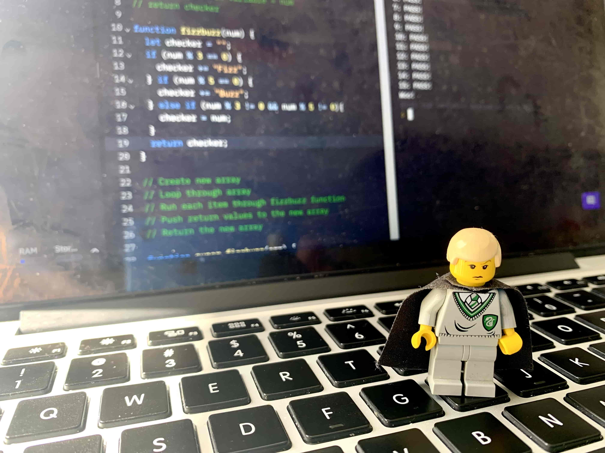

Problem Solving
tech blog
24 February 2022
This week I got mentally blocked on a simple problem when I was trying to create a function which tried to find which door number Scooby was hiding behind. I got stuck trying to use the method 'find' - the function I wrote kept returning undefined if Scooby wasn't hiding behind any door. I found ways around this but knew that my code was getting long and convoluted and that there must be a simpler way to get to the same answer.

Firstly I read documentation of the methods I was trying to use to get an idea of how they work then broke the problem down into smaller pieces and tried the method I had just read about for those smaller chunks. It worked fine and I used console.log and followed the error messages to create a step by step process but then I couldn't get the smaller pieces of code back together and each time I tried I would break other pieces and the tests I had already passed would no longer pass. I thought maybe I needed to include some more methods so started googling other array methods and tried those out and while it started to come together the code was getting a lot more complex and had very specific clauses in it to make it run properly.
I took a break - I maybe accidentally fell asleep in the sun for an hour on this break but when I came back to it my mind was much clearer and I looked at my code - could barely tell what was going on so deleted it and started again. This was the best thing I could have done - I re-read the documentation for 'find' which is the method I was trying to use and there in the second sentence I found my problem - “If no values satisfy the testing function, undefined is returned.” I had been trying to work out why my function kept coming back as undefined when the method was designed to work that way - I just needed to work with that output rather than avoid it.
I felt frustrated when my code was spiralling out of control but a lot more calm after a break - I felt like then I had time to read properly rather than just skimming the documentation and reading the examples. I learnt I need to read (like really read) the documentation, not just the examples. Most importantly read and understand what both the expected input and output of a method should be and then use that information to plan a solution.
On the other hand I am really proud of myself for when I was trying to solve the Super FizzBuzz problem which is a common coding challenge in which you are given a list of numbers and asked to return a new list that replaces multiples of 3 with “Fizz”, multiples of 5 with “Buzz”, multiples of both with “FizzBuzz” and all other numbers returning themselves. I had solved the problem before but knew the solution I had used in the past had a redundant if statement that was basically repeating itself by combining two other if statements I had used and I wanted to avoid this redundancy.
I started by working on understanding the problem - thinking about what my inputs and outputs would be and how I want it to work. Then writing some quick pseudo-code by breaking down the problem into the different parts - what the input for each part would be, how to check it and what I wanted the output to be. Then I was able to start thinking about how I could combine the output for multiples of 3 with the output for multiples of 5 without writing another if statement for it. I figured I needed to somehow concatenate them together so I used console.log to check different cases and what would happen if I used multiple if statements rather than an if else so I could build up the correct outputs. I checked to see if the input was a multiple of 3, if it was I added “Fizz” to a temp string (declared as an empty string) and then I checked to see if the input was a multiple of 5 and if it was I added “Buzz” to the temp string. By doing it this way - if it was a multiple of both it would add “Buzz” to the already existing “Fizz” giving me “FizzBuzz” and then if it was a multiple of neither I would assign temp as the number being inputted. The console.logs throughout showed me it was working in real time whether the block of code I had completed was working in the intended way and could move on.
I felt challenged - I knew I could very quickly just put together the solution I had used before but was frustrated with its repetition so felt determined to find another solution which would remove this. I felt in control - making decisions because I understood what the input would be and how my function would affect the output. I learnt that understanding the problem really well (the expected input and desired output) is so important and makes planning so much easier and that it helps going in with a clear plan of how I want something to work rather than just I want it to work somehow. I learnt that there are a million different solutions to problems and part of problem solving is finding the one that best suits your needs.
Some common problem-solving techniques:
- Pseudocode
- I feel confident using pseudocode and I use it in a few different ways. I think of it as first breaking something down into its smaller parts and then writing out each of the steps I want to take, it is an iterative process and I make sure that I am updating the pseudocode as I go.
- Trying something
- I feel super comfortable using this technique - sometimes maybe too comfortable as I jump in willing to try something without thinking about why or how I will use it.
- Rubber ducky method
- I feel comfortable using the rubber ducky method (or in my case I like to use a lego Draco) but it isn't often my first go-to and especially not normally spoken out-loud, I should get in the habit of trying it more often.
- Reading error messages
- I really enjoy working with error messages - I find it very methodical, like it gives me a step-by-step process of building up a function. It is very satisfying working through each error message one at a time.
- Console.logging
- I like the real time feedback of console.logging - I find it very useful and I am comfortable using it, I use it for most problems that I am working on. I like to use it not only to check to see what parts aren’t working and why but as a check along the way to make sure the outputs are what I expect them to be and also to make sure that it is working in the way I intended it to.
- Googling
- Very comfortable with googling - though I need to take my time when reading the resources sometimes and remind myself to read about inputs and outputs rather than just looking at examples.
- Asking your peers for help
- Not very comfortable with this yet - it is something I want to work on but when I am working on a problem I have the tendency to rely on finding answers myself first before asking others.
- Asking coaches for help
- Again not very comfortable with this yet either - I have this mindset built up over years that I need to exhaust all other options before asking for help so haven’t got to that point yet but again I want to practice this.
- Improving your process with reflection
- I feel comfortable with this - and like thinking about what made solving a problem better or worse this time - I often just do this in my head but from this blog post I have found that actually writing it down is very helpful and makes me flesh out what worked or didn’t and why a lot more.